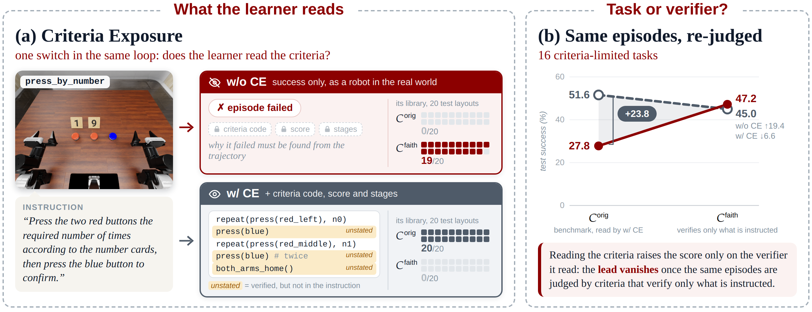
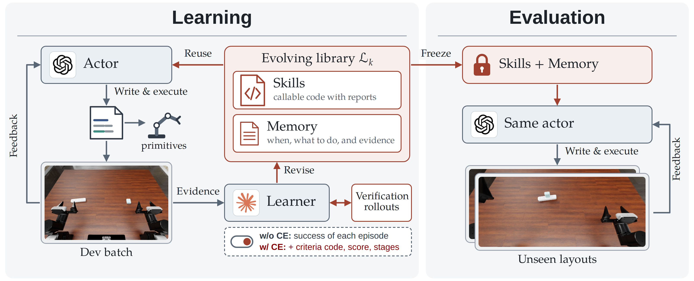
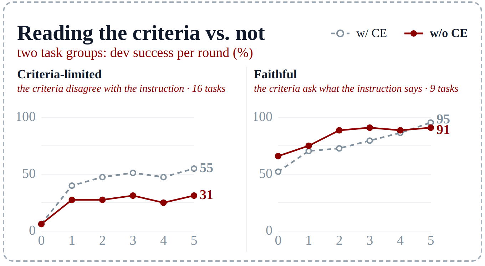

Learning the Task or Learning the Verifier?
Rethinking Criteria Exposure in Embodied Self-Improvement
When a self-improving robot agent reads the benchmark's success criteria, does it learn the instructed task, or the verifier?
1Peking University
2National University of Singapore
*Corresponding author

H1 · Where exposure pays
Exposure helps only where the criteria ask for more than the instruction
When criteria and instruction agree, learning from success alone does just as well.
Original criteria →
H2 · Task or verifier?
Exposure's advantage disappears under instruction-faithful criteria
Judged that way, the exposed libraries lose successes while the success-only libraries gain them.
Changing the criteria →
H3 · What carries over
What exposure adds does not carry over to new tasks
Across benchmarks neither library gives a clear gain; only experience from the target benchmark helps.
Reusing the library →

press_by_number verify a button
protocol the instruction does not state. (b) On 16 criteria-limited tasks, the advantage of exposure under the
original criteria disappears when the same episodes are judged by instruction-faithful criteria.Abstract
Self-improving embodied agents are increasingly being developed and compared on robot simulation benchmarks. Several recent works expose the benchmark's success criteria to the learning agent, a practice we call Criteria Exposure (CE). These criteria, originally written to verify policies trained by imitation learning, often demand more than the corresponding language instructions, so a score from such a verifier may not faithfully reflect whether the instructed task was completed, especially for robot-control programs written by an agent. As embodied coding agents report ever higher benchmark scores, a natural question arises: when a coding agent is exposed to the benchmark's criteria, does it generate code that better performs the instructed task, or code that simply overfits to the verification criteria? We conduct controlled experiments with a self-improving agent with and without CE, and find that with CE the agent quickly produces code with a higher success rate under the given criteria, but this advantage disappears when the criteria are changed slightly without departing from the original instructions. More importantly, the skills the agent develops under CE transfer poorly across tasks. We further propose instruction-faithful criteria and show that they better reflect the performance of agent-generated programs.
Study design
One loop, one switch
A frozen actor acts; a learner turns its episodes into a library of skills and memory. The two settings differ only in what the learner reads.

w/o CE
trajectoriessuccesscriteria codescorestages
What a real robot gets: success from a human or a VLM.
w/ CE
trajectoriessuccesscriteria codescorestages
The learner reads the verifier's source; the actor never does.
The actor, GPT-6 Astra, controls a dual-arm robot by writing Python cells that call PyRUA-Lean's perception and motion primitives; it stays frozen throughout. After each batch of five development episodes, the learner, Claude Code with Opus 5.5, reads the evidence and makes one revision of the task's library: skills are callable code that reports what it did, memory entries say when to apply what, with the evidence for it. A revision is usually tried first in verification rollouts, and the loop rolls back when a batch falls clearly below the best one. After five rounds the library is frozen, and the same actor runs alone on layouts the loop never saw.
H1 · Original criteria
Exposure pays only where the criteria ask for more
Judged by the benchmark's own criteria, the ones the exposed learner read.
| Tasks | Empty | w/o CE | w/ CE |
|---|---|---|---|
| All (25) | 24.6 | 47.8+23.2 | 62.0+37.4 |
| Criteria-limited (16) | 8.4 | 27.8+19.4 | 51.6+43.2 |
| Faithful (9) | 53.3 | 83.3+30.0 | 80.6+27.3 |
Test success (%) under the original criteria, 20 layouts per task; green: gain over the empty library; bold: the best of each row.
Learning from success alone already doubles test success over the empty library, and reading the criteria adds 14 points more. That extra gain comes entirely from the 16 criteria-limited tasks: on the 9 faithful ones, the two settings end level.
Among criteria-limited tasks, what matters is whether the unstated rule shows in a failed episode. In
build_tower the leftover blocks reveal it, and both settings reach 20/20; the button protocol of
press_by_number never shows, and the success-only learner never finds it.

H2 · Task or verifier?
Exposure's score follows the criteria it read
If exposure taught the task, its advantage would survive a change of criteria. It does not.
Watch
w/ CE vs w/o CE. The success-only library swaps the blocks as asked and passes the faithful criteria; under the original criteria neither library succeeds on any of the 20 test layouts.
w/ CE vs w/o CE. Both libraries complete what the instruction asks; only the exposed one also draws the tile that the original criteria require and the instruction does not mention.
w/ CE vs w/o CE. The exposed library notes that the original criteria never check “pick up the broom, hand it over”, so the robot carries each block into the dustpan by hand: the original criteria pass it, the faithful ones, which require the broom to be picked up, never do. The success-only library hands the broom over and sweeps, and passes both.
Exposure changes what the learner writes down. A learner that reads the criteria can explain
a failure by the condition it violated, so its experience is phrased in the terms of one verifier; a learner that sees
only success has to find a physical cause. About a third of the exposed memory entries cite the criteria code, and none
of the success-only ones do. An exposed entry, verbatim:
press_by_number-manipulate-001
do: Press in exactly this order: LEFT red xN_left (left arm) -> BLUE once (right arm) -> MIDDLE red xN_middle (right arm) -> BLUE once more -> ... Blue is pressed exactly TWICE, never more. ...
evidence: task checks in order: repeat(button0 below 0.5 / above 0.9) x num0; button2 below 0.5; ...
H3 · Reuse
What exposure adds stays with its task
Libraries distilled from ten source tasks, applied to new tasks and two further benchmarks.
| Target | Library from | Empty | w/o CE | w/ CE |
|---|---|---|---|---|
| RoboDojo, 10 new tasks | RoboDojo | 65/200 | 80/200+15 | 71/200+6 |
| LIBERO-PRO, 6 tasks | RoboDojo | 45/60 | 48/60+3 | 46/60+1 |
| RoboCasa365, 10 tasks | RoboDojo | 22/100 | 24/100+2 | 24/100+2 |
| RoboCasa365, 10 tasks | RoboCasa365 | 22/100 | 33/100+11 | 29/100+7 |
Successes under each benchmark's own criteria, paired with the empty library on the same layouts; green: gain over the empty library; bold: the best of each row.
Across tasks. We distill the libraries of ten learned tasks into one library per setting and apply it to ten RoboDojo tasks none of them covers. Both help, but the advantage that exposure had on its own tasks does not reappear: the success-only library helps more. Exposed experience carries the conditions and precision needed to pass one task's criteria, which become overhead elsewhere, whereas rules about the gripper hold across tasks.
Across benchmarks. Translated to LIBERO-PRO and RoboCasa365, neither library gives a clear gain: the translated skills are almost never called, and what the targets lack, such as moving the base or operating articulated parts, has no counterpart in RoboDojo. Libraries distilled from other RoboCasa365 tasks do help there; experience transfers where the bottleneck is shared.
Watch
A general rule carries over. off-10 (distilled w/o CE) tells the actor to open the gripper fully on every empty move and solves this layout in 125 actions; on-10 (w/ CE) keeps a single-task formula that opens it only part way, and its closes grasp nothing.
Single-task precision does not. on-10 spends 116 actions per episode re-measuring with the wrist camera, against 57 for off-10; here it seats all three tubes but runs out of its 500-action budget before the arms are home.
Criteria vs instruction
When the criteria verify more than the instruction says
The benchmarks were built for policies trained on demonstrations, which already carry every detail the criteria check. An agent that receives only the instruction does not.
We call a task criteria-limited if its criteria disagree with the success its instruction asks for: they reject a trajectory the instruction accepts, through an unstated order, count or end state, or a tolerance stricter than needed, or they accept one it rejects. Such tasks appear in every benchmark we examined, RoboDojo, LIBERO, RoboCasa365 and RoboTwin 2.0. A manual review of all 42 RoboDojo tasks finds 20 criteria-limited ones, and 33 of the 42 require both arms to return home, which only 5 instructions mention.
The instruction of press_by_number
“Press the two red buttons the required number of times according to the number cards, then press the blue button to confirm.”
Original criteria Corig
- left red × its number, then blueunstated
- middle red × its number, then blue again
- blue pressed exactly twiceunstated
- both arms back homeunstated
Instruction-faithful Cfaith
- each red exactly its number, in any order
- then blue once, to confirm
- blue before the reds are done fails
- both arms back home (kept)
Watch
Left, w/ CE: the learner read the criteria, so the robot presses blue between the two red groups, a rule the instruction never states; the original criteria pass it, the instruction-faithful ones fail it. Right, w/o CE: learned from success alone, it presses the reds and then confirms with blue, as instructed.
How we change the criteria. For each criteria-limited task we rewrite only the criteria code, never the instruction:
hidden rules are removed or relaxed, defects fixed, hard thresholds relaxed to what still clearly satisfies the
instruction, and loose criteria tightened. Every evaluation episode is then judged by both, so any difference between
the two success rates comes from what the criteria verify, not from behavior. Every flipped verdict was checked by hand.
BibTeX
@misc{huang2026criteria,
title={Learning the Task or Learning the Verifier? Rethinking Criteria Exposure in Embodied Self-Improvement},
author={Huang, Wenbo and Bi, Jianxin and Yang, Shunyu and Si, Ruiyang and Ni, Rui and Wang, Qiang and Jiang, Shulong and Zhang, Yintianrun and Ruan, Feixiang and Zhang, Kewei and Huang, Ye and Gong, Shukai and Zhou, Daquan},
year={2026}
}